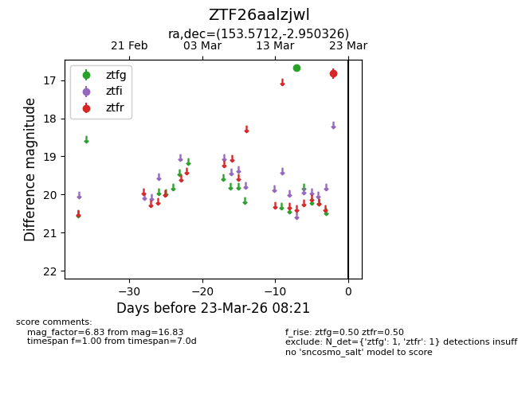
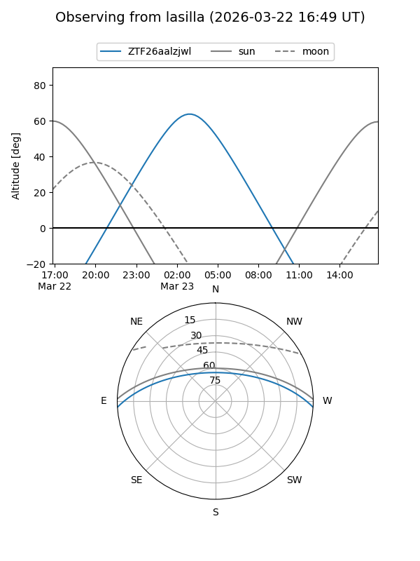
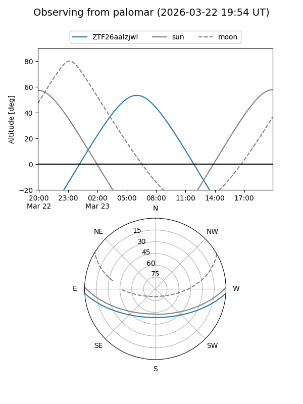

ZTF26aalzjwl
Target ZTF26aalzjwl at 2026-03-23 08:23
Aliases and brokers:
FINK: link
Lasair: link
ALeRCE: link
alt names
ZTF26aalzjwl (ztf,fink_ztf)
Coordinates:
equatorial (ra, dec) = 153.5712,-2.95033
equatorial (HMS+DMS) = 10:14:17.10,-02:57:01.17
galactic (l, b) = (245.1336,+41.63950)
Flags:
Photometry:
last ztfg=16.67, ztfr=16.83
1 ztfg, 1 ztfr detections
Lightcurve

Visibility


Additional plots